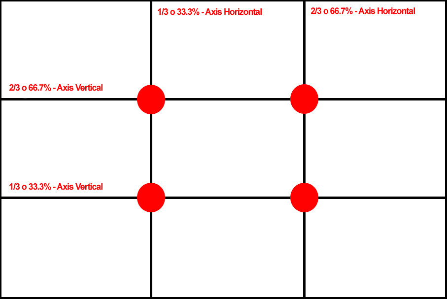

Para empezar tomar fotografias debes tener en cuenta que primero debemos de partir nuestra foto de la siguiente manera y asi poder idenficar los puntos de interseccion.

Una vez dividida nuestra fotografia lograras persirvir a simple vista que esta dividida en 9 parte iguales
Estas son algunas de las imagenes donde nos muestra como es que son tomadas.


En la primer imagen podemos observar como es tomada una fotografia aplicando la regla y posteriormente vemos el resultado de una foto tomada